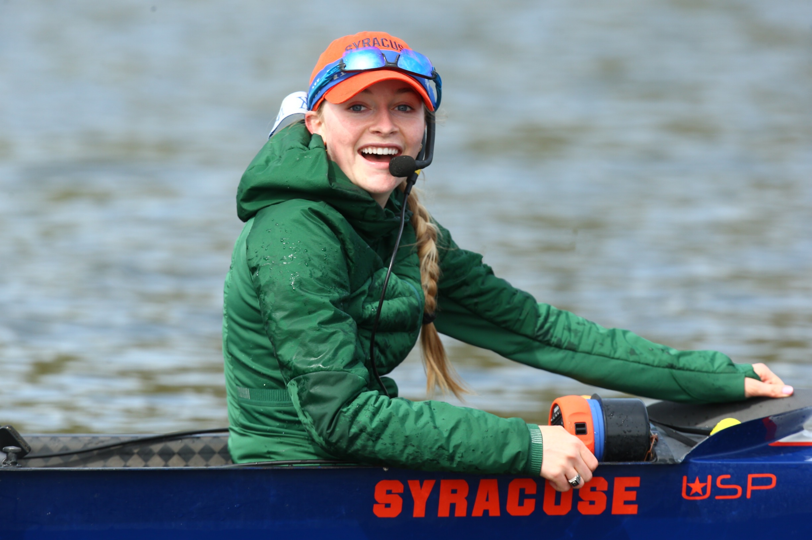

“Information is the best motivation a coxswain can give to their rowers” “The most powerful tool a coxswain can have is knowing the rowers that are in their hull” “Coxswains are the eyes, the ears, and the mouth or the boat.”
Welcome to the Coxnnection! My name is Caileigh, a current coxswain at Syracuse University on the Division-1 women's rowing team and a former coxswain from Merion Mercy Academy’s women's rowing team in Philadelphia. The title of the page is a play on words of “Coxswain” and “Connection.” Why? Coxswains are the crucial connection between not only the coaches, and the rowers but from winning and losing a race. Not only is the word connection applied to the rowing stroke itself but more importantly the connection between coxswain and rower, whose strength fosters a winning boat.
When I was a young coxswain back in 2017, I went to my first crew practice and was put in the coxswain seat. The only thing I was told before going out was, “Don't steer them into the dam (on the Schuylkill River), you'll kill everyone and lose a $40,000 boat.” I wasn't scared at all!! I was lucky to have a great mentor on my team at the time, an older coxswain that continued later to attend the University of Washington, (shoutout Cece!) She was my go-to for all things-coxswain. However, I started to fall in love with rowing and coxing and noticed a lack of resources online to gain knowledge and grow. I also experienced limited coxswain-specific coaching at the time as the rowers were trying to learn how to row. That was my coaching as well, which is most important as a beginner – just to understand the basic foundations of rowing. As you learn that, then you start to develop your own mojo where learning some strategies, new words, and some tricks is your key. Establishing yourself as a COXSWAIN!
I created this website as a place where coxswains or rowers, specifically beginner coxswains looking to learn, can come and explore the various resources and things I used to gain knowledge and get better.